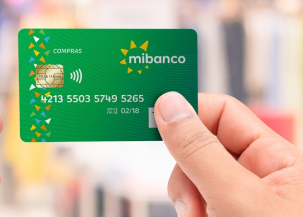

En 1998, se fundó la Edpyme Edyficar con la participación de CARE Perú como accionista
mayoritario, una organización internacional de desarrollo sin fines de lucro. Edyficar
inicia operaciones en Lima, Arequipa y La Libertad sobre la base y experiencia del
programa de apoyo crediticio de CARE Perú dirigido a segmentos de pobladores de menores
recursos. En el año 2005, Edyficar participa en la primera operación a nivel mundial de
titularización de cartera para microfinanzas (BlueOrchard) y en el 2007, consiguió ser
la primera empresa microfinanciera no bancaria en acceder con gran éxito en el
Mercado de Capitales.
Seguir leyendo...